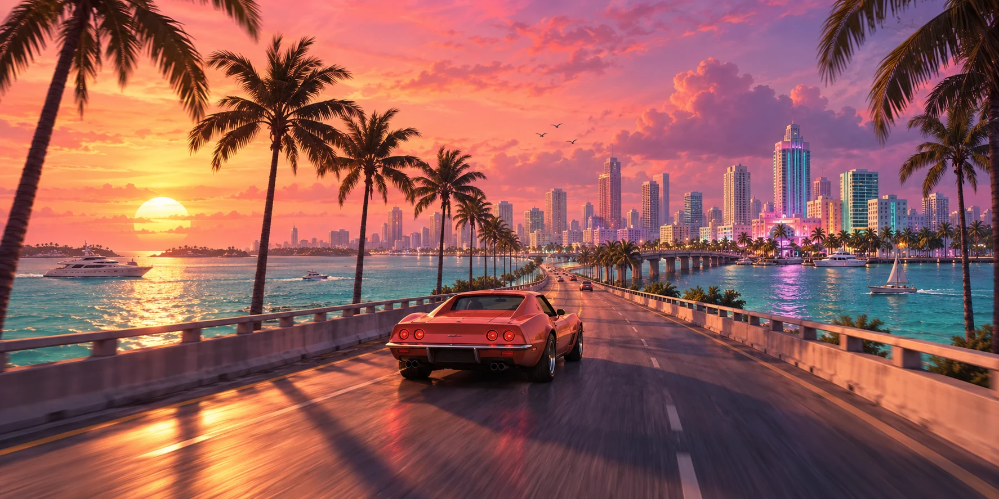
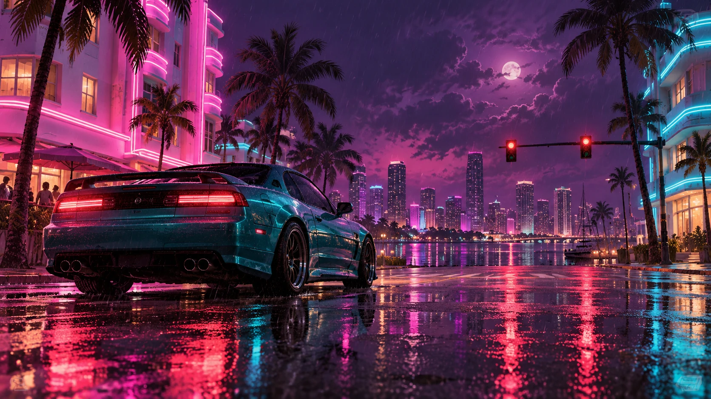

Original AI fan artwork. An imagined scene, not an official screenshot.
02 OCTOBER 2026 · NEWS & COMMENTARY · 3 MIN READ
The October briefing:
sunshine on the horizon
The next stop is Leonida. Here’s the useful stuff to keep in your glovebox while the internet does its usual victory lap around every palm tree.
Confirmed at publication: Rockstar lists GTA VI for 19 November 2026 on PlayStation 5 and Xbox Series X|S. Its current launch listing does not include PC. Release plans can change; always check the official page.
Two names to remember
Rockstar’s setup centres on Jason and Lucia, with a criminal conspiracy spreading across Leonida. That’s the official starting point. How their relationship feels to play is something we’ll discover ourselves.
My favourite part of waiting for a new GTA is the imaginary itinerary. Other people are planning the perfect heist. I’m planning to miss the correct motorway exit because the sunset looks good. There is a real possibility that my first serious decision will be which direction to drive with no destination at all.
The soundtrack gets its own moment
Rockstar’s September news includes an announcement for Grand Theft Auto VI: The Album. It’s a nice excuse to think about how much a GTA city owes to the sound coming out of the dashboard.
We can picture the mood without inventing the mechanics: a humid evening, a ridiculous car, a song you didn’t know five minutes ago and suddenly cannot live without. Whether the game delivers that particular moment is a question for release day. Until then, the imaginary radio is working perfectly.
Our rule for the road
Official announcements go in the news lane. Wishes go in the wish lane. A convincing-looking social post does not magically become a feature list. We’ll keep these monthly briefings readable, link the evidence and save the wild daydreams for articles that actually call themselves daydreams.
Sources checked 2 October 2026: Rockstar’s official GTA VI page · Rockstar’s album announcement.
Original AI fan artwork. This imagined wetlands trip is not a confirmed activity.
02 OCTOBER 2026 · OPINION · 3 MIN READ
The first-hour bucket list:
beautifully unproductive
FAN DAYDREAM / NOT A LIST OF CONFIRMED FEATURES
Every open-world game begins with a sensible plan. Every good first session ends with that plan somewhere at the bottom of a canal.
Here’s my wholly unofficial itinerary for the first hour in GTA VI, assuming the story gives us room to roam. No completion checklist. No speedrun. Just the noble pursuit of getting distracted.
1. Find a view worth stopping for
There’s a special joy in parking badly and doing nothing. Not because the game asked you to admire the scenery, but because a stretch of sky suddenly makes you forget what you were doing. I want one of those moments before I even learn where the shops are.
2. Choose the least sensible route
A straight line is efficient. A mysterious side road is a personality test. I will fail it immediately. If there is a turn that looks like it goes nowhere, that is now my destination. The ideal result is a lovely view. The equally acceptable result is spending ten minutes figuring out how to turn around.
3. Meet the city at walking speed
Driving makes a map big. Walking makes it feel like a place. My plan is to find one busy street, leave the vehicle behind and let the game’s everyday atmosphere do the talking. Big action can wait. I want to see the small, strange details first.
4. Accidentally begin a story of my own
The memory I’m hoping for won’t have a mission title. It’ll be the time I followed a road for no reason, made a terrible decision and spent the rest of the evening explaining it to a friend. An open world earns its place in your head when it becomes a collection of stories you tell yourself.
Will any of this happen exactly as imagined? Probably not. That’s the point. This is a bucket list, not a promise. The best souvenir from a first session is the thing you never thought to put on the list.
Setting reference: Rockstar’s People & Places. Everything in this itinerary is personal opinion.

Original AI fan artwork, not a scene from GTA VI.
02 OCTOBER 2026 · CULTURE & OPINION · 3 MIN READ
Take the long way home
Sometimes the best mission in a GTA game is the one where you ignore the mission for a minute.
There is a familiar ritual: find a car, get out of the busy centre, let the radio pick the mood. You start out travelling to somewhere. A few turns later, travelling has become the entire activity.
That’s what I’m looking forward to most about returning to a coastal setting. Not the exact road layout or a rumoured feature. The feeling of taking a game at your own pace, when the world is doing enough around you that you don’t need to force anything interesting to happen.
A city needs more than a skyline
Skylines look great in a trailer. A place starts to live in your memory when you remember the street below it: the awkward junction, the bit you always overshoot, the corner that looks better at night. The details you learn by getting lost become the landmarks that matter.
My dream GTA VI evening is gloriously mundane. Start in the city. Head out until the buildings thin out. Decide that the original destination was a poor idea. Turn back by a different route. In the imaginary version of this trip, I park neatly at the end. Experience suggests that last part is optimistic.
The unofficial road-trip challenge
- Pick a direction before you pick a destination.
- Stay with one song all the way through, even if it isn’t your usual thing.
- Stop once for a view, without turning it into a checklist.
- Find your way back using a landmark you remember.
These are just fan-made ways to enjoy an open world, not announced game features. You can try the spirit of the challenge in GTA V today. Spawn a Comet, choose some weather and set off. Leonida can wait a little longer; Los Santos still knows how to waste a perfectly good evening.
Want to take a practice lap? Open our GTA V cheats. For actual GTA VI details, start with Rockstar’s official page.